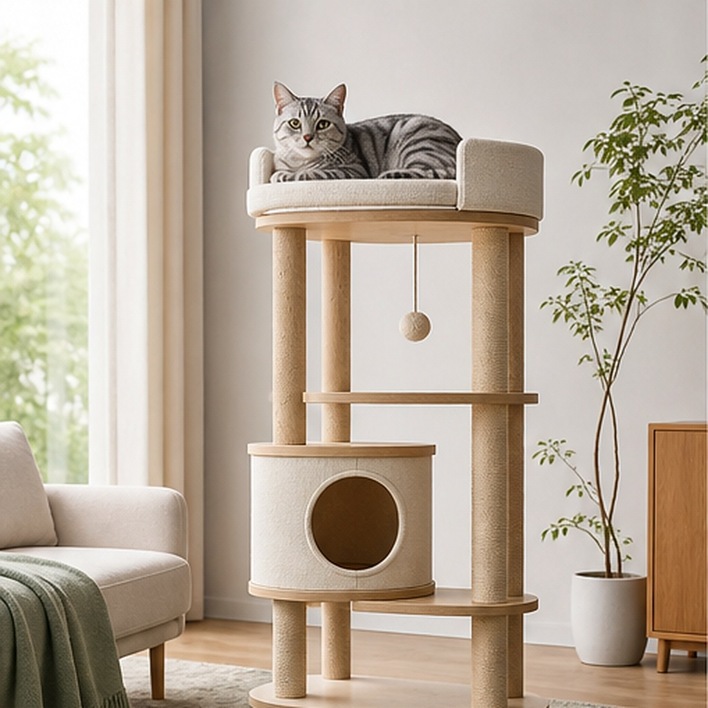
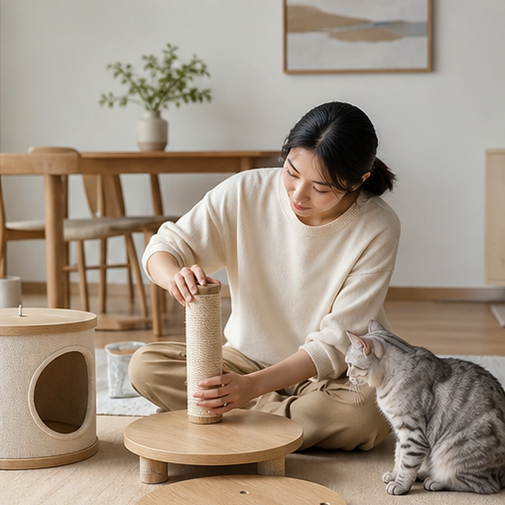
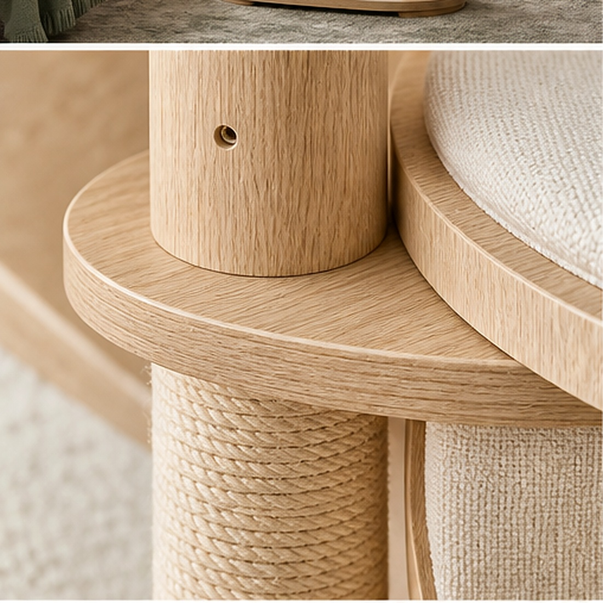
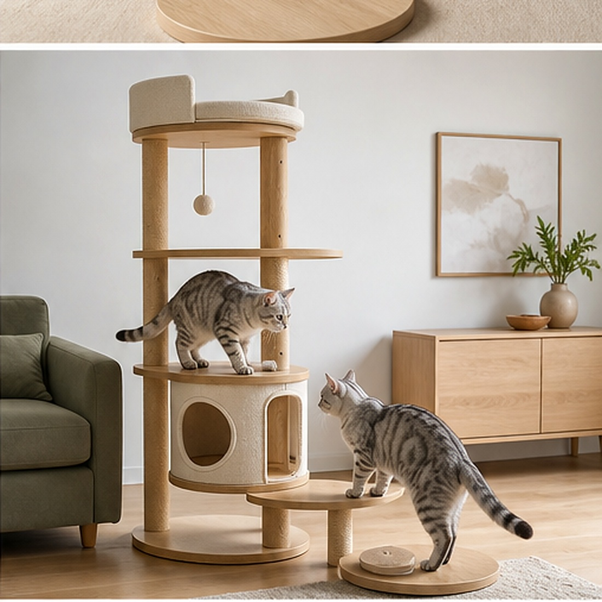
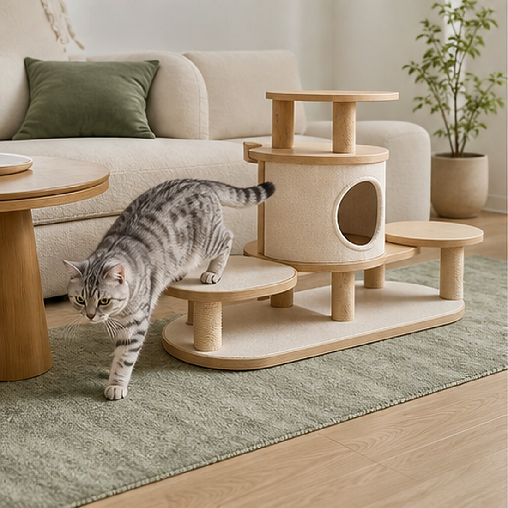

CLIMB · 오르기
짧고 안정적인 단차가 자연스러운 수직 이동을 만듭니다.
Modular cat furniture
오르고, 쉬고, 숨는 모든 행동을 하나의 아름다운 구조 안에 담았습니다.

PALE OAK · 1620H높이만 키운 캣타워가 아니라, 이동과 관찰과 휴식이 자연스럽게 이어지는 작은 건축을 설계했습니다.
짧고 안정적인 단차가 자연스러운 수직 이동을 만듭니다.
집 안 풍경을 가장 편안한 높이에서 오래 관찰합니다.
몸을 감싸는 곡면과 숨숨 공간이 깊은 휴식을 돕습니다.


다묘 가정에서도 동선이 겹치지 않는 넉넉한 스텝과 휴식 공간.

어린 고양이에게는 높은 놀이터로, 시니어에게는 낮고 편안한 쉼터로. 모듈의 순서와 방향을 자유롭게 바꿔주세요.

베이스 · 기둥 4 · 스텝 3 · 라운드 베드 · 하우스